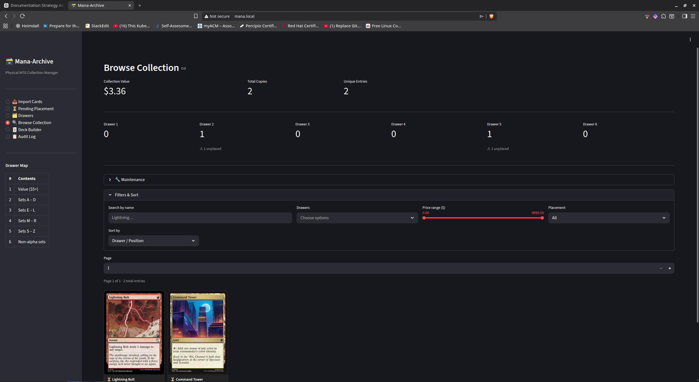

Containerization
Containerized the app with Podman and aligned the runtime to Streamlit’s actual behavior, including correct port exposure and bind address.
Featured project
I rebuilt this project from the ground up to force understanding instead of relying on a messy “it works somehow” setup. The result is a reproducible workflow: local app runtime, containerization, image publishing, Kubernetes delivery, ingress routing, and persistent data.
Validation
Architecture
Client
↓
Traefik Ingress (host: mana.local)
↓
Service (ClusterIP :80 → targetPort 8501)
↓
Pod
↓
Container (Streamlit app on 8501)
↓
PersistentVolumeClaim mounted at /app/data
Implementation highlights
Containerized the app with Podman and aligned the runtime to Streamlit’s actual behavior, including correct port exposure and bind address.
Published images to GitHub Container Registry so build and runtime concerns stay separated. The cluster pulls images instead of building them locally.
Implemented a minimal, explainable stack: Deployment, Service, and Ingress—without unnecessary sidecars or internal reverse proxies.
Mounted a PVC at /app/data so the SQLite database survives Pod recreation. Verified by inserting data, deleting the Pod, and confirming the records remained.
Added GitHub Actions to automatically build and push images to GHCR on pushes to main, creating a real image pipeline instead of a manual-only process.
Diagnosed ingress 404 behavior by understanding that Traefik matched on the Host header. Direct IP access failed until the hostname matched the Ingress rule.
Key lessons